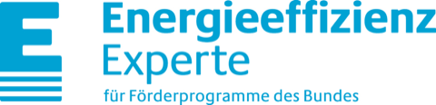

Bis zu30.000 € Zuschusspro Wohnung.
Beantworten Sie drei kurze Fragen zu Ihrem Objekt. Wir melden uns bei Ihnen und planen mit Ihnen den Weg zur maximalen Förderung. Kostenlos und unverbindlich.
Vielen Dank.
Ihre Anfrage ist eingegangen. Wir melden uns zeitnah bei Ihnen, um Ihr Vorhaben persönlich zu besprechen.

So läuft es bei uns.
Ein fester Ansprechpartner vom Erstgespräch bis zum Verwendungsnachweis. Planung, Energie und Förderung aus einer Hand, mit einem Ziel: die maximale Förderung für Ihr Projekt.
Wir schauen uns Ihr Objekt und Ihr Vorhaben individuell an und sagen Ihnen direkt, ob KfW 266 grundsätzlich passt. Kostenlos und unverbindlich.
Wir prüfen, ob Wohnen zulässig ist und planen Grundrisse und Energiekonzept so, dass Sie das Maximum an Förderung herausholen. Etwa wie viele Wohnungen sinnvoll in die Fläche passen und welche Förderung für die Sanierung zusätzlich möglich ist. Denn jede neue Wohnung bringt bis zu 30.000 €.
Wir stellen die Bestätigung zum Antrag aus, Sie reichen den Antrag bei der KfW ein. Handwerker beauftragen Sie erst nach der Zusage der KfW.
Wir planen die Nutzungsänderung, stellen den Bauantrag und bestätigen am Ende als Architekten die Umbaukosten für den Verwendungsnachweis.
Stand Oktober 2026. Angaben ohne Gewähr, maßgeblich sind die Bedingungen der KfW zum Zuschuss 266 „Gewerbe zu Wohnen“.